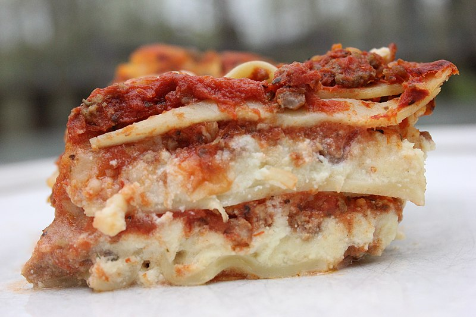

HOME
Lasagna

Description
Could this be the world's best lasagna? You'll have to decide for yourself!
Originally found at allrecipes.com, author John Chandler says, "this lasagna recipe takes a little work, but it is so satisfying and filling that it's worth it."
This is AllRecipes' most popular lasagna recipe:
Ingredients
- Meat:
- 1 lb sweet Italian sausage
- 3/4 lb lean ground beef
- Onion & Garlic:
- 1/2 cup minced onion
- 2 cloves garlic, crushed
- Tomato Products:
- 1x 28-oz can crushed tomatoes
- 2x 6.5-oz can tomato sauce
- 2x 6-oz can tomato paste
- 1/2 cup water
- 2 tbsp white sugar
- Adds subtle sweetness and enhances the flavor of the sauce
- Spices and Seasonings:
- 4 tbsp chopped fresh parsley, divided
- 1 1/2 tsp dried basil leaves
- 1 1/2 tsp salt, divided, or to taste
- 1 tsp Italian seasoning
- 1/2 tsp fennel seeds
- 1/4 tsp ground black pepper
- 12 lasagna noodles
- Cheeses:
- 16 oz ricotta
- 3/4 lb mozzarella, sliced
- 3/4 cup grated Parmesan
- 1 egg
- An egg helps bind the ricotta so it doesn't ooze out of the lasagna when you cut into it
Steps
- Make the meat sauce
- Cook sausage, ground beef, onion, and garlic in a Dutch oven over medium heat until well browned
- Stir in crushed tomatoes, tomato sauce, tomato paste, and water
- Season with sugar, 2 tbsp parsley, basil, 1 tsp salt, italian seasoning, fennel seeds, and pepper
- Simmer, covered, for about 1 1/2 hours, stirring occasionally
- Cook the noodles
- Bring a large pot of lightly salted water to a boil
- Cook lasagna noodles in boiling water for 8 to 10 minutes
- Drain noodles and rinse with cold water
- Make the ricotta mixture
- In a mixing bowl, combine ricotta cheese with egg, remaining 2 tablespoons parsley, and 1/2 teaspoon salt
- Preheat the oven to 375 degrees F (190 degrees C)
- Assemble the lasagna in layers
- spread 1 1/2 cups of meat sauce in the bottom of a 9x13-inch baking dish
- Arrange 6 noodles lengthwise over meat sauce
- Spread with 1/2 of the ricotta cheese mixture
- Top with 1/3 of the mozzarella cheese slices
- Spoon 1 1/2 cups meat sauce over mozzarella
- Sprinkle with 1/4 cup Parmesan cheese
- Repeat layers, and top with remaining mozzarella and Parmesan cheese,
- Cover with foil
- To prevent sticking, either spray foil with cooking spray or make sure the foil does not touch the cheese
- Bake in the preheated oven for 25 minutes. Remove the foil and bake for an additional 25 minutes
- Rest lasagna for 15 minutes before serving